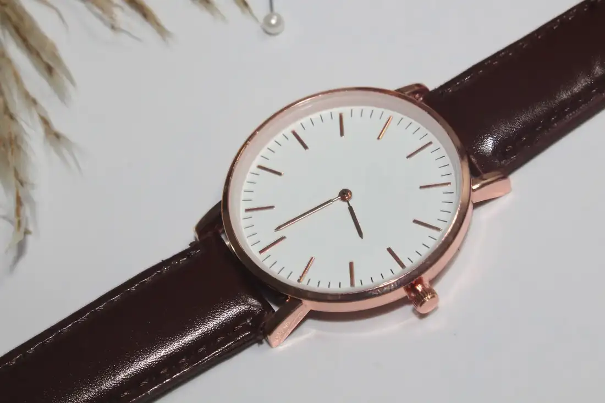
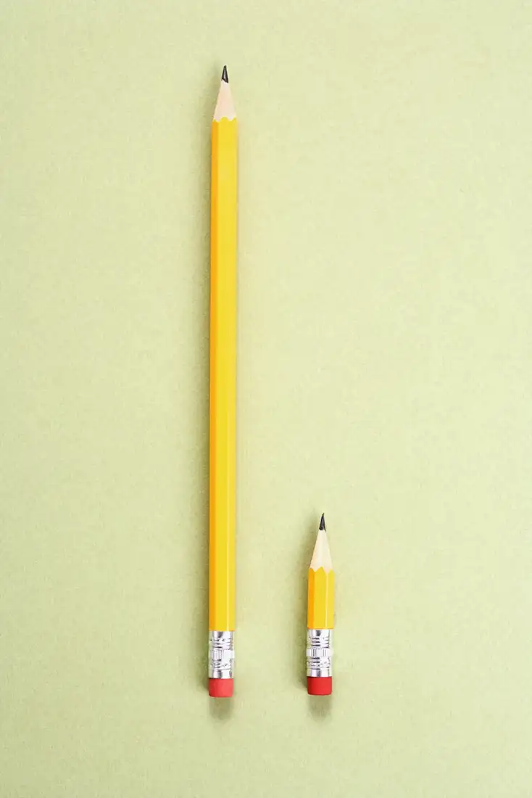
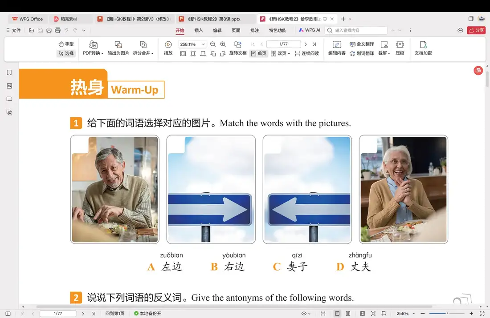
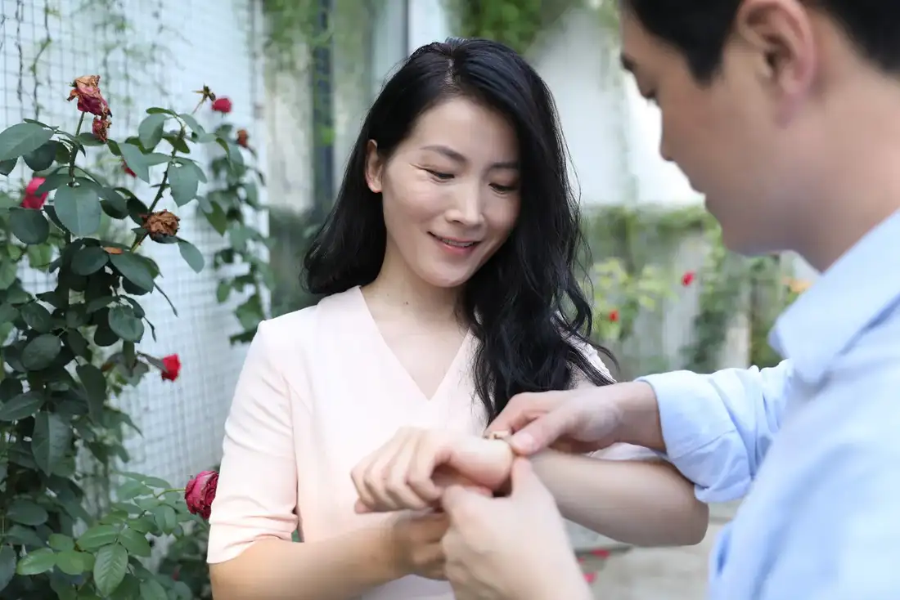

Giáo trình HSK 2 · Lesson 8虽然你忘了，但是我记得
Suīrán nǐ wàng le, dànshì wǒ jìde
Dù bạn đã quên, nhưng tôi vẫn nhớ

Mục tiêu bài khóa
Sau bài học, người học có thể nói về hoạt động sinh nhật, so sánh với 比 và sử dụng cấu trúc 虽然……但是…….
生日的庆祝活动Trao đổi về các hoạt động chúc mừng sinh nhật và quà tặng.
“比”的用法Dùng 比 để so sánh sự khác biệt giữa hai người hoặc sự vật.
“虽然……但是……”Dùng cặp liên từ 虽然 và 但是 để diễn đạt quan hệ chuyển ý.
Khởi động · 热身
Chọn từ rồi chọn đúng hình ảnh tương ứng.
💡 Hãy chọn một từ trước.
Từ vựng · 生词
Mặt trước có từ, nghĩa, loại từ và nút phát/dừng. Mặt sau có hình ảnh và ví dụ theo PowerPoint.
手表
shǒubiǎo
đồng hồ đeo tay
danh từChạm vùng trống để lật thẻ

这是我从北京买的手表。 🔊Zhè shì wǒ cóng Běijīng mǎi de shǒubiǎo.
Đây là chiếc đồng hồ tôi mua ở Bắc Kinh. 妈妈送了我一块手表。 🔊Māma sòng le wǒ yí kuài shǒubiǎo.
Mẹ đã tặng tôi một chiếc đồng hồ. 左边
zuǒbian
bên trái
danh từ chỉ phương vịChạm vùng trống để lật thẻ
坐在你左边的人是谁？ 🔊Zuò zài nǐ zuǒbian de rén shì shéi?
Người ngồi bên trái bạn là ai? 我觉得左边的手表更好看。 🔊Wǒ juéde zuǒbian de shǒubiǎo gèng hǎokàn.
Tôi thấy chiếc đồng hồ bên trái đẹp hơn. 左
zuǒ
trái; phía trái
danh từ chỉ phương vịChạm vùng trống để lật thẻ
出门往左走就到学校了。 🔊Chūmén wǎng zuǒ zǒu jiù dào xuéxiào le.
Ra khỏi cửa rồi đi sang trái là đến trường. 你左手里有什么？ 🔊Nǐ zuǒshǒu lǐ yǒu shénme?
Trong tay trái của bạn có gì? 比
bǐ
hơn; so với; so sánh
giới từ / động từChạm vùng trống để lật thẻ

左边的笔比右边的笔长。 🔊Zuǒbian de bǐ bǐ yòubian de bǐ cháng.
Cây bút bên trái dài hơn cây bút bên phải. 姐姐比妹妹高。 🔊Jiějie bǐ mèimei gāo.
Chị gái cao hơn em gái. 右边
yòubian
bên phải
danh từ chỉ phương vịChạm vùng trống để lật thẻ
坐在右边的是我姐姐。 🔊Zuò zài yòubian de shì wǒ jiějie.
Người ngồi bên phải là chị gái tôi. 床的右边是桌子。 🔊Chuáng de yòubian shì zhuōzi.
Bên phải giường là cái bàn. 右
yòu
phải; phía phải
danh từ chỉ phương vịChạm vùng trống để lật thẻ
往左走还是往右走？ 🔊Wǎng zuǒ zǒu háishi wǎng yòu zǒu?
Đi sang trái hay sang phải? 你右手里有什么？ 🔊Nǐ yòushǒu lǐ yǒu shénme?
Trong tay phải của bạn có gì? 记得
jìde
nhớ; nhớ được
động từChạm vùng trống để lật thẻ
我记得你的名字。 🔊Wǒ jìde nǐ de míngzi.
Tôi nhớ tên của bạn. 我记得星期天是妈妈的生日。 🔊Wǒ jìde xīngqītiān shì māma de shēngrì.
Tôi nhớ Chủ nhật là sinh nhật của mẹ. 爱情片
àiqíngpiàn
phim tình cảm; phim tình yêu
danh từChạm vùng trống để lật thẻ
我喜欢看爱情片。 🔊Wǒ xǐhuan kàn àiqíngpiàn.
Tôi thích xem phim tình cảm. 我们看爱情片吧。 🔊Wǒmen kàn àiqíngpiàn ba.
Chúng ta xem phim tình cảm nhé. 有意思
yǒu yìsi
thú vị; có ý nghĩa
tính từChạm vùng trống để lật thẻ
这本书很有意思。 🔊Zhè běn shū hěn yǒu yìsi.
Cuốn sách này rất thú vị. 中文课很有意思。 🔊Zhōngwén kè hěn yǒu yìsi.
Giờ học tiếng Trung rất thú vị. 点
diǎn
gọi; chọn món ăn
động từChạm vùng trống để lật thẻ
您好，现在点菜吗？ 🔊Nín hǎo, xiànzài diǎn cài ma?
Xin chào, bây giờ gọi món phải không ạ? 我们点这几个菜，谢谢。 🔊Wǒmen diǎn zhè jǐ ge cài, xièxie.
Chúng tôi gọi mấy món này, cảm ơn. 虽然
suīrán
tuy; mặc dù
liên từChạm vùng trống để lật thẻ
虽然下雨了，但是不太冷。 🔊Suīrán xiàyǔ le, dànshì bú tài lěng.
Tuy trời mưa nhưng không lạnh lắm. 虽然我喜欢踢足球，但是踢得不太好。 🔊Suīrán wǒ xǐhuan tī zúqiú, dànshì tī de bú tài hǎo.
Tuy tôi thích đá bóng nhưng đá không giỏi lắm. 但是
dànshì
nhưng; nhưng mà
liên từChạm vùng trống để lật thẻ
虽然很晚了，但是爸爸还没回来。 🔊Suīrán hěn wǎn le, dànshì bàba hái méi huílai.
Tuy đã muộn nhưng bố vẫn chưa về. 虽然有点儿累，但是我很喜欢游泳。 🔊Suīrán yǒudiǎnr lèi, dànshì wǒ hěn xǐhuan yóuyǒng.
Tuy hơi mệt nhưng tôi rất thích bơi. 花
huā
tiêu; tốn; dùng
động từChạm vùng trống để lật thẻ

妈妈买了很多东西，花了不少钱。 🔊Māma mǎi le hěn duō dōngxi, huā le bù shǎo qián.
Mẹ mua rất nhiều đồ, tốn không ít tiền. 弟弟花了很多时间学游泳。 🔊Dìdi huā le hěn duō shíjiān xué yóuyǒng.
Em trai dành nhiều thời gian học bơi. 妻子
qīzi
vợ
danh từChạm vùng trống để lật thẻ

这是我的妻子。 🔊Zhè shì wǒ de qīzi.
Đây là vợ của tôi. 这块手表是送给我妻子的。 🔊Zhè kuài shǒubiǎo shì sòng gěi wǒ qīzi de.
Chiếc đồng hồ này dùng để tặng vợ tôi. 丈夫
zhàngfu
chồng
danh từChạm vùng trống để lật thẻ
这是我丈夫。 🔊Zhè shì wǒ zhàngfu.
Đây là chồng của tôi. 星期天，我和丈夫去看电影。 🔊Xīngqītiān, wǒ hé zhàngfu qù kàn diànyǐng.
Chủ nhật, tôi và chồng đi xem phim. 饭馆
fànguǎn
nhà hàng; quán ăn
danh từChạm vùng trống để lật thẻ
明天我们要去饭馆吃饭。 🔊Míngtiān wǒmen yào qù fànguǎn chīfàn.
Ngày mai chúng tôi sẽ đi ăn ở nhà hàng. 饭馆的烤鸭很好吃。 🔊Fànguǎn de kǎoyā hěn hǎochī.
Vịt quay của nhà hàng rất ngon. Bài khóa · 课文
Ảnh ngữ cảnh bên trái, hội thoại bên phải. Bài khóa 4 trình bày đúng dạng đoạn nhật ký.
Tương tác đóng vai
Chọn bài khóa và nhân vật. Lời của vai đã chọn sẽ được ẩn; phần này chỉ hiển thị chữ Hán.
Củng cố từ vựng
Lật đáp án từ vựng rồi hoàn thành câu hỏi đọc hiểu.
Câu hỏi đọc hiểu
Mẫu câu cần nhớ: 楼下站着一个人。她经常跑上来找我玩。虽然你忘了，但是我记得！